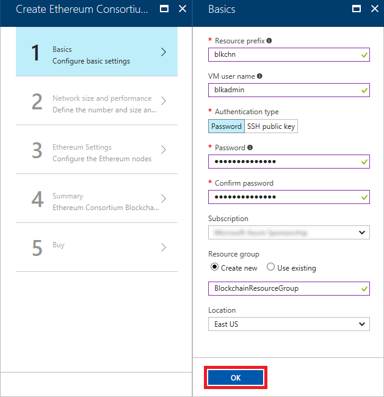
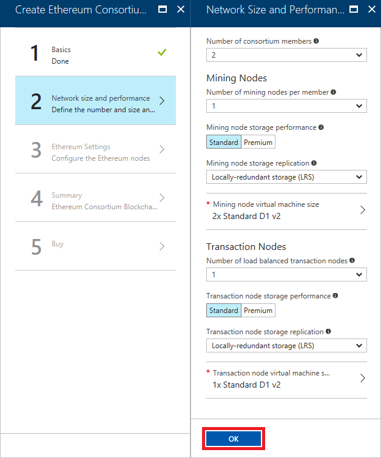
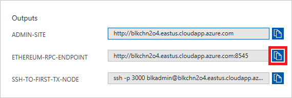

Blockchain-as-a-Service on Azure
Overview
Blockchain is one of the world's most talked-about technologies, and one that has the potential to fundamentally change the way we use the Internet. Originally designed for Bitcoin, Blockchain remains the technology behind that digital currency but is not limited to applications involving virtual money. In the words of Dan Tapscott, author, TED speaker, and Executive Director of the Blockchain Research Institute, "Blockchain is an incorruptible digital ledger of economic transactions that can be programmed to record not just financial transactions, but virtually everything of value." One of the more inventive uses for Blockchain is to implement tamper-proof digital voting systems, a concept that is being actively explored in the U.S. and abroad.
Blockchain gets its name from the manner in which it stores data. Transactions such as a transfer of money from one party to another or a vote cast for a political candidate are stored in cryptographically sealed blocks. Blocks are joined together into chains ("blockchains"), with each block in the chain containing a hash of the previous block. A blockchain acts like an electronic ledger, and rather than be stored in one place, it is replicated across countless computers (nodes) in a Blockchain network. This decentralization means that a blockchain has no single point of failure and is controlled by no single entity. The latter is especially important for a system whose primary goal is to allow private transactions to take place without involving a "trusted" third party such as a bank.
Anyone can build a Blockchain network and use it to host blockchains. Microsoft Azure makes it incredibly simple to do both by supporting Blockchain-as-a-Service. A few button clicks in the Azure Portal are sufficient to deploy a network of virtual machines provisioned with popular Blockchain implementations such as Ethereum, Corda, or
Hyperledger Fabric.
Ethereum was one of the first general-purpose Blockchain implementations. The software is open-source and is the basis for Ethereum's own cryptocurrency known as Ether. You can deploy Ethereum networks of your own and use its Blockchain implementation however you wish. Among other features, Ethereum supports smart contracts, which are written in languages such as Solidity and then compiled into bytecode and deployed to the blockchain for execution.
In this lab, you will deploy an Ethereum network on Azure and create your own cryptocurrency named "My Coin" to run on it. The currency will be brokered by a smart contract that allows funds to be transferred between accounts. Along the way, you will get first-hand experience running Blockchain networks on Azure, as well as writing smart contracts for Ethereum and deploying them to the network.
Objectives
In this hands-on lab, you will learn how to:
- Deploy an Ethereum blockchain network on Azure
- Use MetaMask to create an Ethereum wallet
- Write smart contracts and deploy them to Ethereum networks
- Manipulate Ethereum blockchains using Node.js
Prerequisites
Exercises
This hands-on lab includes the following exercises:
Estimated time to complete this lab: 60 minutes.
Exercise 1: Create a blockchain on Azure
Deploying a blockchain on Azure only takes a few minutes. In this exercise, you will use the Azure Portal to deploy an Ethereum Blockchain network in the cloud.
-
In your browser, navigate to the Azure Portal. If you are asked to sign in, do so using your Microsoft account.
-
In the portal, click + New, followed by Blockchain and Ethereum Consortium Blockchain.

Creating an Ethereum blockchain
-
Click the Create button at the bottom of the "Ethereum Consortium Blockchain" blade.
-
In the "Basics" blade, set Resource prefix to "blkchn" (without quotation marks), VM user name to "blkadmin" (without quotation marks), and the password to "Blockchain!321" (once more, without quotation marks). Make sure Create new is selected under Resource group, and enter "BlockchainResourceGroup" as the resource-group name. Select the location nearest you, and then click OK.

Entering basic settings
-
Click OK at the bottom of the "Network Size and Performance" blade to accept the default settings for VM sizes, number of nodes, and so on.

Accepting the default network settings
-
In the "Ethereum Settings" blade, set Network ID to 123456, and enter "Blockchain!321" in four places as the Ethereum account password and private key passphrase. Then click OK.

Entering Ethereum settings
-
Review the settings in the "Summary" blade and click OK.

Reviewing the settings
-
Click the Purchase button to begin the deployment.

Beginning the deployment
The deployment will probably take about 5 minutes to complete, but rather than wait for it to finish, proceed to Exercise 2 and begin the process of setting up a wallet.
Exercise 2: Create a wallet
The next task is to set up a wallet and connect it to the Ethereum network deployed in Exercise 1. For this, you'll use a Google Chrome extension called MetaMask. MetaMask enables you to use the Ether from a Blockchain network on Ethereum-enabled Web sites as well as create an account and seed it with Ether. You won't be using Ether directly, but setting up a wallet is an easy way to create an account on the network that can be used in digital transactions.
-
If Google Chrome isn't installed on your computer, download it and install it now.
-
Start Chrome, paste the following link into the address bar, and press Enter.
https://chrome.google.com/webstore/detail/meta-mask/nkbihfbeogaeaoehlefnkodbefgpgknn?hl=en
-
Click Add to Chrome.

Adding MetaMask to Chrome
-
Click Add Extension.

Installing the MetaMask extension
-
Click the MetaMask icon to the right of the address bar, and then click Accept.

Accepting the privacy notice
-
Scroll to the bottom of the terms of use, and then click Accept.

Accepting the terms of use
-
Enter "Blockchain!321" (without quotation marks) as the password in two places, and then click Create.

Creating a MetaMask account
-
Copy the 12 words presented to you into a text file and save the file for safekeeping. Then click I've Copied It Somewhere Safe.
You won't need this recovery information in this lab, but in the real world, these words act as a pass phrase that can be used to restore access to a MetaMask account that you have been locked out of.

Saving MetaMask recovery information
-
Return to the Azure Portal. Click Resource groups in the ribbon on the left, and then click the resource group that you created for the Ethereum network in Exercise 1.

Opening the resource group
-
Make sure all deployments have finished. (If they haven't, periodically click the Refresh button at the top of the blade until all deployments have completed.) Then click Deployments, followed by microsoft-azure-blockchain....

Opening the Blockchain resource
-
Click the Copy button next to ETHEREUM-RPC-ENDPOINT under "Outputs." This URL is very important, because it allows apps to make JSON-RPC calls to the network to deploy smart contracts and perform other blockchain-related tasks.

Copying the endpoint URL
-
Return to Chrome and the MetaMask window. (If the window is no longer displayed, click the MetaMask icon to the right of the address bar to display it again.) Then click the hamburger icon to display the MetaMask menu, and select Settings from the menu.

Opening MetaMask settings
-
Paste the URL on the clipboard into the "Current Network" box and and click Save. Then click the back arrow next to "Settings."

Connecting the wallet to the network
-
Return to the Azure Portal and click the Copy button next to ADMIN-SITE.

Copying the admin-site link
-
Open a new browser instance and paste the URL on the clipboard into the browser's address bar. Then press Enter.

Opening the admin site
-
Return to Chrome. Click the ellipsis (...) in the MetaMask window, and then select Copy Address to clipboard. The "address" you are copying is actually the account ID for Account 1, which was created automatically when you "joined" the network by pasting the Ethereum RPC endpoint URL into MetaMask.

Copying the account address to the clipboard
-
Return to the admin site you open in Step 15 and paste the value on the clipboard into the Address of Recipient box. Then click Submit to seed Account 1 with 1,000 Ether.

Boostrapping the account with 1,000 Ether
-
Return to MetaMask and click the refresh icon. Then select Account 1 and confirm that the account now shows a balance of 1,000 Ether.

Refreshing the wallet
Seeding your wallet with Ether isn't strictly necessary because you won't be using the Ether in it in this lab; you will use your own cryptocurrency instead. But if you were deploying an Ethereum network for the purpose of transferring Ether between accounts, you now know how to get some Ether into your account for testing purposes.
Where did the 1,000 Ether come from? They came from the coinbase account that was created when the network was created. The coinbase account holds all the Ether that haven't been transferred to individual accounts. Later, you will use Ether in this account to fuel the transactions that you perform via the contracts that you deploy. Before you can do that, you must unlock the account.
Exercise 3: Unlock the coinbase account (Windows)
To unlock the coinbase account, you must connect to one of the Ethereum servers with SSH and execute a couple of commands. If you are running macOS or Linux, skip to Exercise 4 and use the built-in SSH client. If you are running Windows instead, proceed with this exercise.
-
PuTTY is a popular (and free) SSH client for Windows. If PuTTY isn't installed on your computer, download and install it now.
-
Return to the Azure Portal and click the Copy button next to ADMIN-SITE.
Copying the admin-site link
-
Start PuTTY and paste the value on the clipboard into the Host Name (or IP address) field. Remove "http://" from the beginning of the string, and type 3000 into the Port field to connect using port 3000. Then click the Open button to initiate a Secure Shell (SSH) connection. If you are prompted with a security warning asking if you want to update the cached key, answer yes.

Connecting with PuTTY
-
A PuTTY terminal window will appear and you will be prompted to login as. Log in with the user name ("blkadmin") and password ("Blockchain!321") you entered in Exercise 1, Step 4.
-
Execute the following command in the console window to attach to the Ethereum node:
geth attach
-
Now execute the following command to unlock the coinbase account:
web3.personal.unlockAccount(web3.personal.listAccounts[0],"Blockchain!321", 15000)
This will allow you to use the blockchain to transfer funds from the coinbase account. Make sure that the output from the command is the word "true."
-
Type exit into the console window to detach from Ethereum.
-
Type exit again to close the SSH connection and end the PuTTY session.
Now that the coinbase account is unlocked, you are ready to start using the network to execute transactions on the blockchain. Proceed to Exercise 5. Exercise 4 is for macOS and Linux users only.
Exercise 4: Unlock the coinbase account (macOS and Linux)
To unlock the coinbase account, you must connect to one of the Ethereum servers with SSH and execute a couple of commands. macOS and Linux users can use the built-in SSH client to connect.
-
Return to the Azure Portal and click the Copy button next to SSH-TO-FIRST-TX-NODE.

Copying the SSH command
-
Open a terminal window and paste the command on the clipboard into the terminal window. Then press Enter to execute the command. If you are prompted with a security warning asking if you want to update the cached key, answer yes.
-
When prompted for a password, enter the password ("Blockchain!321") you entered in Exercise 1, Step 4.
-
Execute the following command in the terminal window to attach to the Ethereum node:
geth attach
-
Now execute the following command to unlock the coinbase account:
web3.personal.unlockAccount(web3.personal.listAccounts[0],"Blockchain!321", 15000)
This will allow you to use the blockchain to transfer funds from the coinbase account. Make sure that the output from the command is the word "true."
-
Type exit into the terminal window to detach from Ethereum.
Now that the coinbase account is unlocked, you are ready to start using the network to execute transactions on the blockchain.
Exercise 5: Deploy a smart contract
Ethereum blockchains use "smart contracts" to broker transactions. A smart contract is essentially a program that runs on blockchain transaction nodes. Ethereum developers often use the popular Truffle framework to develop smart contracts. In this exercise, you will set up a Truffle development environment, code and then compile a smart contract, and deploy it to the blockchain.
-
If Node.js isn't installed on your system, go to https://nodejs.org and install the latest LTS version for your operating system.
If you aren't sure whether Node.js is installed, open a Command Prompt or terminal window and type node -v. If you don't see a Node.js version number, then Node.js isn't installed. If a version of Node.js older than 6.0 is installed, it is highly recommend that you download and install the latest version.
-
If you are using macOS or Linux, open a terminal. If you are using Windows instead, open a PowerShell window.
-
In the terminal or PowerShell window, use the following command to create a directory named "truffle" in the location of your choice:
mkdir truffle
-
Now change to the "truffle" directory:
cd truffle
-
Use the following command to install Truffle:
npm install -g truffle
-
Most smart contracts for Ethereum networks are written in a language called Solidity, which is similar to JavaScript. Use the following command to install the Solidity compiler:
npm install -g solc
-
Now use the following command to initialize a Truffle project in the current directory. This will download a few Solidity scripts and install them, and create a scaffolding in the "truffle" folder.
truffle init
-
Use your favorite text or program editor to open the file named truffle.js in the "truffle" folder. Return to the Azure Portal and copy the Ethereum RPC endpoint to the clipboard as you did in Exercise 2, Step 11. Replace "localhost" on line 4 of truffle.js with the URL on the clipboard, and remove the leading "http://" and the trailing ":8545," as shown below. Then save the modified file.
module.exports = {
networks: {
development: {
host: "blkchn2o4.eastus.cloudapp.azure.com",
port: 8545,
network_id: "*" // Match any network id
}
}
};
-
Create a new contract in the subdirectory named "contracts" (which was created when you ran truffle init) by creating a text file named myCoin.sol in that directory, pasting in the following code, and then saving the file:
pragma solidity ^0.4.4;
// Declares the contract
contract myCoin {
// This is a mapping that works like a dictionary or associated array in other languages.
mapping (address => uint) balances;
// This registers an event
event Transfer(address indexed _from, address indexed _to, uint256 _value);
// The contract constructor, which is called when the contract is deployed to the blockchain. The contract is persistent on the blockchain, so it remains until it is removed.
function myCoin() {
balances[tx.origin] = 100000;
}
// This method modifies the blockchain. The sender is required to fuel the transaction in Ether.
function sendCoin(address receiver, uint amount) returns(bool sufficient) {
if (balances[msg.sender] < amount) return false;
balances[msg.sender] -= amount;
balances[receiver] += amount;
Transfer(msg.sender, receiver, amount);
return true;
}
// This method does not modify the blockchain, so it does not require an account to fuel for the call.
function getBalance(address addr) returns(uint) {
return balances[addr];
}
}
This contract, named "myCoin," is written in Solidity. Solidity files are compiled to JSON files containing interface definitions as well as bytecode that is used when the contracts are deployed. The contract contains a function named sendCoin that, when called, transfers the specified number of coins from the sender's account to the receiver's account.
-
Create a new file named 3_deploy_myCoin.js in the "migrations" subdirectory. Paste the following code into the file and save it:
var myCoin = artifacts.require("./myCoin.sol");
module.exports = function(deployer) {
deployer.deploy(myCoin);
};This is the code that deploys the "myCoin" contract to the blockchain.
-
Return to the terminal or PowerShell window and execute the following command to compile the contract:
truffle compile
-
Now use the following command to deploy the contract to the blockchain:
truffle deploy
The contract is now present in the blockchain and waiting for its sendCoin function to be called to transfer funds. All we lack is a mechanism for calling that function using RPC. In the next exercise, you will close the loop by using a Node.js app to invoke the contract.
Exercise 6: Deploy an app that uses the contract
Smart contracts are designed to be used by applications that use the blockchain for secure transactions. In this exercise, you will create a Node.js app that uses the "myCoin" contract and then run it to broker an exchange of My Coin currency — specifically, to transfer funds from the coinbase account to the account you created in Exercise 2 (Account 1). The app will use a library named web3.js, which wraps the Ethereum RPC API and dramatically simplifies code for interacting with smart contracts. Note that there are also web3 libraries available for other languages, including Java and Python.
-
In a terminal or PowerShell window, use the following command to create a directory named "use-contract" in the location of your choice:
mkdir use-contract
-
Make "use-contract" the current directory:
cd use-contract
-
Use the following command to install the NPM package named "web3:"
npm install web3@^0.20.0
-
Create a new text file named use-contract.js in the "use-contract" folder. Then paste in the following code:
var Web3 = require("web3");
var AzureBlockchainRPC = "AZURE_RPC_URL";
var account1 = "ACCOUNT1_ADDRESS";
var contractAddress = "CONTRACT_ADDRESS";
let web3 = new Web3();
web3.setProvider(new web3.providers.HttpProvider(AzureBlockchainRPC));
// The abi object defines the contract interface. Web3 uses this to build the contract interface.
var abi = JSON.parse('[{"constant":false,"inputs":[{"name":"receiver","type":"address"},{"name":"amount","type":"uint256"}],"name":"sendCoin","outputs":[{"name":"sufficient","type":"bool"}],"payable":false,"type":"function"},{"constant":false,"inputs":[{"name":"addr","type":"address"}],"name":"getBalance","outputs":[{"name":"","type":"uint256"}],"payable":false,"type":"function"},{"inputs":[],"payable":false,"type":"constructor"},{"anonymous":false,"inputs":[{"indexed":true,"name":"_from","type":"address"},{"indexed":true,"name":"_to","type":"address"},{"indexed":false,"name":"_value","type":"uint256"}],"name":"Transfer","type":"event"}]');
let myCoinContract = web3.eth.contract(abi);
let myCoinInstance = myCoinContract.at(contractAddress);
// This sets up a listener for the Transfer event.
var transferEvent = myCoinInstance.Transfer( {}, {fromBlock: 0, toBlock: 'latest'});
// Watching for transfer....
transferEvent.watch(function(error, result) {
if (!error) {
console.log("Coin Sent!\n\nChecking balance for coin base...");
console.log(myCoinInstance.getBalance.call(web3.eth.coinbase));
console.log("Checking balance for account1...");
console.log(myCoinInstance.getBalance.call(account1));
}
else {
console.log("An error occurred.");
console.log(error);
}
process.exit();
});
web3.eth.defaultAccount = web3.eth.coinbase;
console.log("Sending some coin...");
console.log(myCoinInstance.sendCoin(account1, 1000, {from: web3.eth.coinbase}));
console.log("Checking balance for coin base...")
console.log(myCoinInstance.getBalance.call(web3.eth.coinbase));
console.log("Checking balance for account1...")
console.log(myCoinInstance.getBalance.call(account1));
console.log("Waiting for event to fire...");This code, when executed, transfers 1,000 My Coin from the coinbase account to Account 1. Notice the asynchronous nature of the call. Before calling sendCoin to invoke the contract, the code registers a handler for the Transfer event that fires after the transaction has completed.
-
Replace AZURE_RPC_URL on line 3 of use-contract.js with the Ethereum RPC endpoint obtained from the Azure Portal (see Exercise 2, Step 11).
-
In the PowerShell or terminal window, CD back to the "truffle" directory that you created in the previous exercise. Then use the following command to list the addresses of all the smart contracts in the project, including the "myCoin" contract and some sample contracts that were created when you ran truffle init:
truffle networks
-
Replace CONTRACT_ADDRESS on line 5 of use-contract.js with the "myCoin" address in the output.

Retrieving the contract address
-
Return to the MetaMask window in Chrome and copy the address for Account 1 to the clipboard as you did in Exercise 2, Step 16. Then replace ACCOUNT1_ADDRESS on line 4 of use-contract.js with the address on the clipboard and save your changes to use-contract.js.
Copying the account address to the clipboard
-
In the PowerShell or terminal window, CD back to the "use-contract" directory. Then execute the following command to invoke the contract and transfer My Coin:
node use-contract.js
-
Watch the output. Onserve that before the Transfer event fires, the accounts hold their original balances even though the sendCoin method had already been invoked. Checking the balances again in the Transfer event handler reveals the final, post-transaction balances, and shows that 1,000 My Coin were transferred to Account 1.
Sending some coin...
0xb677604426c9589bb1072f1ec517d2ad3d5e37c56f0b5d9a3b2d689a4bd962ad
Checking balance for coin base...
{ [String: '100000'] s: 1, e: 5, c: [ 100000 ] }
Checking balance for account1...
{ [String: '0'] s: 1, e: 0, c: [ 0 ] }
Waiting for event to fire...
Coin Sent!
Checking balance for coin base...
{ [String: '99000'] s: 1, e: 4, c: [ 99000 ] }
Checking balance for account1...
{ [String: '1000'] s: 1, e: 3, c: [ 1000 ] }
If you'd like, you can run the app again to transfer another 1,000 My Coin. Each time you run the app and invoke the contract, the balance in the coinbase account will decrease by 1,000, and the balance in Account 1 will increase by the same amount.
Exercise 7: Delete the Ethereum network
Resource groups are a useful feature of Azure because they simplify the task of managing related resources. One of the most practical reasons to use resource groups is that deleting a resource group deletes all of the resources it contains. Rather than delete those resources one by one, you can delete them all at once.
In this exercise, you will delete the resource group created in Exercise 1 when you created the Ethereum network. Deleting the resource group deletes everything in it and prevents any further charges from being incurred for it.
-
Return to the blade for the resource group you created in Exercise 1. Then click the Delete button at the top of the blade.

Deleting a resource group
-
For safety, you are required to type in the resource group's name. (Once deleted, a resource group cannot be recovered.) Type the name of the resource group. Then click the Delete button to remove all traces of this lab from your Azure subscription.
After a few minutes, the blockchain and all of the associated resources will be deleted. Billing stops when you click the Delete button, so you're not charged for the time required to delete the resources. Similarly, billing doesn't start until the resources are fully and successfully deployed.
Summary
This is just one example of the kinds of apps you can build with Blockchain, and with Ethereum Blockchain networks in particular. It also demonstrates how easily Blockchain networks are deployed on Azure. For more on Azure blockchains and on Ethereum networks and their capabilities, refer to https://www.ethereum.org/.
Copyright 2017 Microsoft Corporation. All rights reserved. Except where otherwise noted, these materials are licensed under the terms of the MIT License. You may use them according to the license as is most appropriate for your project. The terms of this license can be found at https://opensource.org/licenses/MIT.